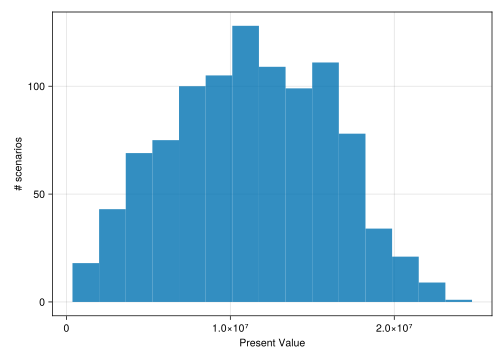

using CSV, DataFrames
using MortalityTables, ActuaryUtilities
using Dates
using ThreadsX
using BenchmarkTools
using CairoMakie
using RandomDefine a datatype. Not strictly necessary, but will make extending the program with more functions easier.
Type annotations are optional, but providing them is able to coerce the values to be all plain bits (i.e. simple, non-referenced values like arrays are) when the type is constructed. This makes the whole data be stored in the stack and is an example of data-oriented design. It’s much slower without the type annotations (~0.5 million policies per second, ~50x slower).
@enum Sex Female = 1 Male = 2
@enum Risk Standard = 1 Preferred = 2
struct Policy
id::Int
sex::Sex
benefit_base::Float64
COLA::Float64
mode::Int
issue_date::Date
issue_age::Int
risk::Risk
endLoad the data:
sample_csv_data =
IOBuffer(
raw"id,sex,benefit_base,COLA,mode,issue_date,issue_age,risk
1,M,100000.0,0.03,12,1999-12-05,30,Std
2,F,200000.0,0.03,12,1999-12-05,30,Pref"
)
policies = let
# read CSV directly into a dataframe
# df = CSV.read("sample_inforce.csv",DataFrame) # use local string for notebook
df = CSV.read(sample_csv_data, DataFrame)
# map over each row and construct an array of Policy objects
map(eachrow(df)) do row
Policy(
row.id,
row.sex == "M" ? Male : Female,
row.benefit_base,
row.COLA,
row.mode,
row.issue_date,
row.issue_age,
row.risk == "Std" ? Standard : Preferred,
)
end
end2-element Vector{Policy}:
Policy(1, Male, 100000.0, 0.03, 12, Date("1999-12-05"), 30, Standard)
Policy(2, Female, 200000.0, 0.03, 12, Date("1999-12-05"), 30, Preferred)Define what mortality gets used:
mort = Dict(
Male => MortalityTables.table(988).ultimate,
Female => MortalityTables.table(992).ultimate,
)
function mortality(pol::Policy, params)
return params.mortality[pol.sex]
endmortality (generic function with 1 method)This defines the core logic of the policy projection and will write the results to the given out container (here, a named tuple of arrays).
This is using a threaded approach where it could be operating on any of the computer’s available threads, thus acheiving thread-based parallelism (as opposed to multi-processor (multi-machine) or GPU-based computation which requires formulating the problem a bit differently (array/matrix based). For the scale of computation here, I think I’d apply this model of parallelism.
function pol_project!(out, policy, params)
# some starting values for the given policy
dur = duration(policy.issue_date, params.val_date)
start_age = policy.issue_age + dur - 1
COLA_factor = (1 + policy.COLA)
cur_benefit = policy.benefit_base * COLA_factor^(dur - 1)
# get the right mortality vector
qs = mortality(policy, params)
# grab the current thread's id to write to results container without conflicting with other threads
tid = Threads.threadid()
ω = lastindex(qs)
# inbounds turns off bounds-checking, which makes hot loops faster but first write loop without it to ensure you don't create an error (will crash if you have the error without bounds checking)
@inbounds for t in 1:min(params.proj_length, ω - start_age)
q = qs[start_age+t] # get current mortality
if (rand() < q)
return # if dead then just return and don't increment the results anymore
else
# pay benefit, add a life to the output count, and increment the benefit for next year
out.benefits[t, tid] += cur_benefit
out.lives[t, tid] += 1
cur_benefit *= COLA_factor
end
end
endpol_project! (generic function with 1 method)Parameters for our projection:
params = (
val_date=Date(2021, 12, 31),
proj_length=100,
mortality=mort,
)(val_date = Date("2021-12-31"), proj_length = 100, mortality = Dict{Sex, OffsetArrays.OffsetVector{Float64, Vector{Float64}}}(Male => [0.022571, 0.022571, 0.022571, 0.022571, 0.022571, 0.022571, 0.022571, 0.022571, 0.022571, 0.022571 … 0.4, 0.4, 0.4, 0.4, 0.4, 0.4, 0.4, 0.4, 0.4, 0.4], Female => [0.00745, 0.00745, 0.00745, 0.00745, 0.00745, 0.00745, 0.00745, 0.00745, 0.00745, 0.00745 … 0.376246, 0.386015, 0.393507, 0.398308, 0.4, 0.4, 0.4, 0.4, 0.4, 1.0]))Check the number of threads we’re using:
Threads.nthreads()4function project(policies, params)
threads = Threads.nthreads()
benefits = zeros(params.proj_length, threads)
lives = zeros(Int, params.proj_length, threads)
out = (; benefits, lives)
ThreadsX.foreach(policies) do pol
pol_project!(out, pol, params)
end
map(x -> vec(reduce(+, x, dims=2)), out)
endproject (generic function with 1 method)Example of single projection:
project(repeat(policies, 100_000), params)(benefits = [5.632041071730104e10, 5.673784917378363e10, 5.7095494627022224e10, 5.739296558536684e10, 5.765668319695172e10, 5.785147298991435e10, 5.79964498594893e10, 5.806223921979738e10, 5.809264362799425e10, 5.8029114887314896e10 … 0.0, 0.0, 0.0, 0.0, 0.0, 0.0, 0.0, 0.0, 0.0, 0.0], lives = [195316, 190438, 185423, 180374, 175350, 170235, 165130, 159991, 154877, 149681 … 0, 0, 0, 0, 0, 0, 0, 0, 0, 0])Benchmarking
Using a Macbook Air M3 laptop, about 45 million policies able to be stochastically projected per second:
policies_to_benchmark = 45_000_000
# adjust the `repeat` depending on how many policies are already in the array
# to match the target number for the benchmark
n = policies_to_benchmark ÷ length(policies)
@benchmark project(p, r) setup = (p = repeat($policies, $n); r = $params)BenchmarkTools.Trial: 4 samples with 1 evaluation. Range (min … max): 1.075 s … 1.161 s ┊ GC (min … max): 0.00% … 0.00% Time (median): 1.083 s ┊ GC (median): 0.00% Time (mean ± σ): 1.101 s ± 40.427 ms ┊ GC (mean ± σ): 0.00% ± 0.00% █ █ █ █ █▁█▁▁▁▁▁█▁▁▁▁▁▁▁▁▁▁▁▁▁▁▁▁▁▁▁▁▁▁▁▁▁▁▁▁▁▁▁▁▁▁▁▁▁▁▁▁▁▁▁▁▁▁▁█ ▁ 1.07 s Histogram: frequency by time 1.16 s < Memory estimate: 29.27 KiB, allocs estimate: 227.
Stochastic Ensemble
Loop through and calculate the reults n times (this is only running the two policies in the sample data” n times).
function stochastic_proj(policies, params, n)
ThreadsX.map(1:n) do i
project(policies, params)
end
end
stoch = stochastic_proj(policies, params, 1000)1000-element Vector{@NamedTuple{benefits::Vector{Float64}, lives::Vector{Int64}}}:
(benefits = [574831.0226582347, 592075.9533379817, 609838.2319381211, 628133.3788962648, 646977.3802631528, 666386.7016710474, 686378.3027211789, 706969.6518028142, 728178.7413568987, 750024.1035976056 … 0.0, 0.0, 0.0, 0.0, 0.0, 0.0, 0.0, 0.0, 0.0, 0.0], lives = [2, 2, 2, 2, 2, 2, 2, 2, 2, 2 … 0, 0, 0, 0, 0, 0, 0, 0, 0, 0])
(benefits = [574831.0226582347, 592075.9533379817, 609838.2319381211, 628133.3788962648, 646977.3802631528, 666386.7016710474, 686378.3027211789, 706969.6518028142, 728178.7413568987, 750024.1035976056 … 0.0, 0.0, 0.0, 0.0, 0.0, 0.0, 0.0, 0.0, 0.0, 0.0], lives = [2, 2, 2, 2, 2, 2, 2, 2, 2, 2 … 0, 0, 0, 0, 0, 0, 0, 0, 0, 0])
(benefits = [574831.0226582347, 592075.9533379817, 609838.2319381211, 628133.3788962648, 646977.3802631528, 666386.7016710474, 686378.3027211789, 706969.6518028142, 728178.7413568987, 750024.1035976056 … 0.0, 0.0, 0.0, 0.0, 0.0, 0.0, 0.0, 0.0, 0.0, 0.0], lives = [2, 2, 2, 2, 2, 2, 2, 2, 2, 2 … 0, 0, 0, 0, 0, 0, 0, 0, 0, 0])
(benefits = [574831.0226582347, 592075.9533379817, 609838.2319381211, 628133.3788962648, 646977.3802631528, 666386.7016710474, 686378.3027211789, 471313.1012018761, 485452.49423793243, 500016.0690650704 … 0.0, 0.0, 0.0, 0.0, 0.0, 0.0, 0.0, 0.0, 0.0, 0.0], lives = [2, 2, 2, 2, 2, 2, 2, 1, 1, 1 … 0, 0, 0, 0, 0, 0, 0, 0, 0, 0])
(benefits = [574831.0226582347, 592075.9533379817, 609838.2319381211, 628133.3788962648, 646977.3802631528, 444257.8011140316, 457585.53514745255, 471313.1012018761, 485452.49423793243, 500016.0690650704 … 0.0, 0.0, 0.0, 0.0, 0.0, 0.0, 0.0, 0.0, 0.0, 0.0], lives = [2, 2, 2, 2, 2, 1, 1, 1, 1, 1 … 0, 0, 0, 0, 0, 0, 0, 0, 0, 0])
(benefits = [574831.0226582347, 592075.9533379817, 609838.2319381211, 628133.3788962648, 646977.3802631528, 666386.7016710474, 686378.3027211789, 706969.6518028142, 728178.7413568987, 750024.1035976056 … 0.0, 0.0, 0.0, 0.0, 0.0, 0.0, 0.0, 0.0, 0.0, 0.0], lives = [2, 2, 2, 2, 2, 2, 2, 2, 2, 2 … 0, 0, 0, 0, 0, 0, 0, 0, 0, 0])
(benefits = [574831.0226582347, 592075.9533379817, 609838.2319381211, 628133.3788962648, 646977.3802631528, 666386.7016710474, 686378.3027211789, 706969.6518028142, 728178.7413568987, 750024.1035976056 … 0.0, 0.0, 0.0, 0.0, 0.0, 0.0, 0.0, 0.0, 0.0, 0.0], lives = [2, 2, 2, 2, 2, 2, 2, 2, 2, 2 … 0, 0, 0, 0, 0, 0, 0, 0, 0, 0])
(benefits = [383220.68177215644, 394717.3022253211, 406558.82129208074, 418755.5859308432, 431318.2535087685, 444257.8011140316, 457585.53514745255, 471313.1012018761, 485452.49423793243, 500016.0690650704 … 0.0, 0.0, 0.0, 0.0, 0.0, 0.0, 0.0, 0.0, 0.0, 0.0], lives = [1, 1, 1, 1, 1, 1, 1, 1, 1, 1 … 0, 0, 0, 0, 0, 0, 0, 0, 0, 0])
(benefits = [574831.0226582347, 592075.9533379817, 406558.82129208074, 418755.5859308432, 431318.2535087685, 444257.8011140316, 457585.53514745255, 471313.1012018761, 485452.49423793243, 500016.0690650704 … 0.0, 0.0, 0.0, 0.0, 0.0, 0.0, 0.0, 0.0, 0.0, 0.0], lives = [2, 2, 1, 1, 1, 1, 1, 1, 1, 1 … 0, 0, 0, 0, 0, 0, 0, 0, 0, 0])
(benefits = [574831.0226582347, 592075.9533379817, 609838.2319381211, 628133.3788962648, 646977.3802631528, 666386.7016710474, 686378.3027211789, 706969.6518028142, 728178.7413568987, 750024.1035976056 … 0.0, 0.0, 0.0, 0.0, 0.0, 0.0, 0.0, 0.0, 0.0, 0.0], lives = [2, 2, 2, 2, 2, 2, 2, 2, 2, 2 … 0, 0, 0, 0, 0, 0, 0, 0, 0, 0])
(benefits = [574831.0226582347, 394717.3022253211, 406558.82129208074, 418755.5859308432, 431318.2535087685, 444257.8011140316, 457585.53514745255, 471313.1012018761, 485452.49423793243, 500016.0690650704 … 0.0, 0.0, 0.0, 0.0, 0.0, 0.0, 0.0, 0.0, 0.0, 0.0], lives = [2, 1, 1, 1, 1, 1, 1, 1, 1, 1 … 0, 0, 0, 0, 0, 0, 0, 0, 0, 0])
(benefits = [574831.0226582347, 592075.9533379817, 609838.2319381211, 628133.3788962648, 646977.3802631528, 666386.7016710474, 686378.3027211789, 706969.6518028142, 728178.7413568987, 750024.1035976056 … 0.0, 0.0, 0.0, 0.0, 0.0, 0.0, 0.0, 0.0, 0.0, 0.0], lives = [2, 2, 2, 2, 2, 2, 2, 2, 2, 2 … 0, 0, 0, 0, 0, 0, 0, 0, 0, 0])
(benefits = [574831.0226582347, 592075.9533379817, 609838.2319381211, 628133.3788962648, 646977.3802631528, 666386.7016710474, 686378.3027211789, 706969.6518028142, 728178.7413568987, 750024.1035976056 … 0.0, 0.0, 0.0, 0.0, 0.0, 0.0, 0.0, 0.0, 0.0, 0.0], lives = [2, 2, 2, 2, 2, 2, 2, 2, 2, 2 … 0, 0, 0, 0, 0, 0, 0, 0, 0, 0])
⋮
(benefits = [574831.0226582347, 592075.9533379817, 609838.2319381211, 628133.3788962648, 646977.3802631528, 666386.7016710474, 686378.3027211789, 706969.6518028142, 485452.49423793243, 500016.0690650704 … 0.0, 0.0, 0.0, 0.0, 0.0, 0.0, 0.0, 0.0, 0.0, 0.0], lives = [2, 2, 2, 2, 2, 2, 2, 2, 1, 1 … 0, 0, 0, 0, 0, 0, 0, 0, 0, 0])
(benefits = [574831.0226582347, 592075.9533379817, 406558.82129208074, 418755.5859308432, 431318.2535087685, 444257.8011140316, 457585.53514745255, 471313.1012018761, 485452.49423793243, 500016.0690650704 … 0.0, 0.0, 0.0, 0.0, 0.0, 0.0, 0.0, 0.0, 0.0, 0.0], lives = [2, 2, 1, 1, 1, 1, 1, 1, 1, 1 … 0, 0, 0, 0, 0, 0, 0, 0, 0, 0])
(benefits = [574831.0226582347, 592075.9533379817, 609838.2319381211, 628133.3788962648, 646977.3802631528, 666386.7016710474, 686378.3027211789, 706969.6518028142, 728178.7413568987, 750024.1035976056 … 0.0, 0.0, 0.0, 0.0, 0.0, 0.0, 0.0, 0.0, 0.0, 0.0], lives = [2, 2, 2, 2, 2, 2, 2, 2, 2, 2 … 0, 0, 0, 0, 0, 0, 0, 0, 0, 0])
(benefits = [574831.0226582347, 592075.9533379817, 609838.2319381211, 418755.5859308432, 431318.2535087685, 444257.8011140316, 457585.53514745255, 471313.1012018761, 485452.49423793243, 500016.0690650704 … 0.0, 0.0, 0.0, 0.0, 0.0, 0.0, 0.0, 0.0, 0.0, 0.0], lives = [2, 2, 2, 1, 1, 1, 1, 1, 1, 1 … 0, 0, 0, 0, 0, 0, 0, 0, 0, 0])
(benefits = [574831.0226582347, 592075.9533379817, 609838.2319381211, 628133.3788962648, 646977.3802631528, 666386.7016710474, 686378.3027211789, 471313.1012018761, 485452.49423793243, 500016.0690650704 … 0.0, 0.0, 0.0, 0.0, 0.0, 0.0, 0.0, 0.0, 0.0, 0.0], lives = [2, 2, 2, 2, 2, 2, 2, 1, 1, 1 … 0, 0, 0, 0, 0, 0, 0, 0, 0, 0])
(benefits = [574831.0226582347, 592075.9533379817, 609838.2319381211, 628133.3788962648, 646977.3802631528, 666386.7016710474, 686378.3027211789, 706969.6518028142, 728178.7413568987, 750024.1035976056 … 0.0, 0.0, 0.0, 0.0, 0.0, 0.0, 0.0, 0.0, 0.0, 0.0], lives = [2, 2, 2, 2, 2, 2, 2, 2, 2, 2 … 0, 0, 0, 0, 0, 0, 0, 0, 0, 0])
(benefits = [574831.0226582347, 394717.3022253211, 406558.82129208074, 418755.5859308432, 431318.2535087685, 444257.8011140316, 457585.53514745255, 471313.1012018761, 485452.49423793243, 500016.0690650704 … 0.0, 0.0, 0.0, 0.0, 0.0, 0.0, 0.0, 0.0, 0.0, 0.0], lives = [2, 1, 1, 1, 1, 1, 1, 1, 1, 1 … 0, 0, 0, 0, 0, 0, 0, 0, 0, 0])
(benefits = [574831.0226582347, 592075.9533379817, 609838.2319381211, 418755.5859308432, 431318.2535087685, 444257.8011140316, 0.0, 0.0, 0.0, 0.0 … 0.0, 0.0, 0.0, 0.0, 0.0, 0.0, 0.0, 0.0, 0.0, 0.0], lives = [2, 2, 2, 1, 1, 1, 0, 0, 0, 0 … 0, 0, 0, 0, 0, 0, 0, 0, 0, 0])
(benefits = [383220.68177215644, 394717.3022253211, 406558.82129208074, 418755.5859308432, 431318.2535087685, 444257.8011140316, 457585.53514745255, 471313.1012018761, 485452.49423793243, 500016.0690650704 … 0.0, 0.0, 0.0, 0.0, 0.0, 0.0, 0.0, 0.0, 0.0, 0.0], lives = [1, 1, 1, 1, 1, 1, 1, 1, 1, 1 … 0, 0, 0, 0, 0, 0, 0, 0, 0, 0])
(benefits = [574831.0226582347, 592075.9533379817, 609838.2319381211, 628133.3788962648, 646977.3802631528, 666386.7016710474, 686378.3027211789, 706969.6518028142, 728178.7413568987, 750024.1035976056 … 0.0, 0.0, 0.0, 0.0, 0.0, 0.0, 0.0, 0.0, 0.0, 0.0], lives = [2, 2, 2, 2, 2, 2, 2, 2, 2, 2 … 0, 0, 0, 0, 0, 0, 0, 0, 0, 0])
(benefits = [574831.0226582347, 197358.65111266056, 203279.41064604037, 0.0, 0.0, 0.0, 0.0, 0.0, 0.0, 0.0 … 0.0, 0.0, 0.0, 0.0, 0.0, 0.0, 0.0, 0.0, 0.0, 0.0], lives = [2, 1, 1, 0, 0, 0, 0, 0, 0, 0 … 0, 0, 0, 0, 0, 0, 0, 0, 0, 0])
(benefits = [574831.0226582347, 592075.9533379817, 609838.2319381211, 628133.3788962648, 646977.3802631528, 666386.7016710474, 686378.3027211789, 706969.6518028142, 728178.7413568987, 750024.1035976056 … 0.0, 0.0, 0.0, 0.0, 0.0, 0.0, 0.0, 0.0, 0.0, 0.0], lives = [2, 2, 2, 2, 2, 2, 2, 2, 2, 2 … 0, 0, 0, 0, 0, 0, 0, 0, 0, 0])v = [pv(0.03, s.benefits) for s in stoch]
hist(v,
bins=15;
axis=(xlabel="Present Value", ylabel="# scenarios")
)┌ Warning: Found `resolution` in the theme when creating a `Scene`. The `resolution` keyword for `Scene`s and `Figure`s has been deprecated. Use `Figure(; size = ...` or `Scene(; size = ...)` instead, which better reflects that this is a unitless size and not a pixel resolution. The key could also come from `set_theme!` calls or related theming functions.
└ @ Makie ~/.julia/packages/Makie/We6MY/src/scenes.jl:227
Further Optimization
In no particular order:
- the RNG could be made faster: https://bkamins.github.io/julialang/2020/11/20/rand.html
- Could make the stochastic set distributed, but at the current speed the overhead of distributed computing is probably more time than it would save. Same thing with GPU projections
- …